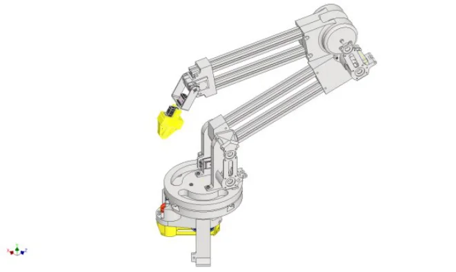
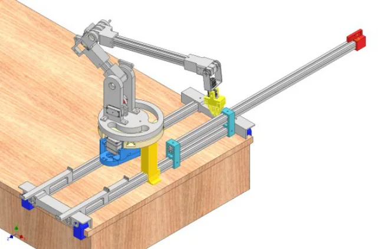
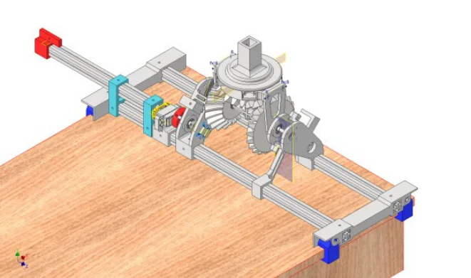

Tres microcontroladores reparten el trabajo: uno planifica, otro controla los motores en tiempo real y otro hace de puente inalámbrico. La cinemática y el control están escritos desde cero en C/C++, y un modelo YOLO11n-seg entrenado por mí corre dentro de la cámara.
Three microcontrollers split the work: one plans, one runs the motors in real time and one acts as a wireless bridge. Kinematics and control are written from scratch in C/C++, and a YOLO11n-seg model I trained runs inside the camera.
01El retoThe challenge
El Laboratorio de Diseño de Procesos de la UVG tiene una línea de empaque con una banda transportadora y ocho tipos de piezas de plástico. El objetivo era una plataforma didáctica de robótica, control embebido y visión: un brazo que reconozca las piezas sobre la banda en movimiento, recoja las tres piezas objetivo y las deposite en contenedores distintos.
UVG's Process Design Lab has a packaging line with a conveyor belt and eight kinds of plastic parts. The goal was a teaching platform for robotics, embedded control and vision: an arm that recognizes parts on the moving belt, picks the three target parts and drops them into separate bins.
Las restricciones lo hacían interesante: servos HiWonder de bus serie definidos desde el inicio, perfiles de aluminio 2020, una cámara HuskyLens 2 con poca capacidad de cómputo y un brazo de solo 5 grados de libertad, que no puede alcanzar cualquier orientación.
The constraints made it interesting: HiWonder serial-bus servos fixed from the start, 2020 aluminum extrusions, a HuskyLens 2 camera with limited compute, and an arm with only 5 degrees of freedom, which cannot reach every orientation.
02ArquitecturaArchitecture
Separé el sistema en tres microcontroladores para que cada uno hiciera una sola cosa bien. La decisión clave fue sacar el control de motores de la Portenta H7: su sistema operativo y la red WiFi introducían variabilidad que el lazo de control no toleraba.
I split the system across three microcontrollers so each one does a single job well. The key decision was moving motor control off the Portenta H7: its operating system and WiFi stack introduced jitter the control loop couldn't tolerate.
Portenta H7
el cerebro · Mbed OSthe brain · Mbed OS- Máquina de estados y menús
- Cinemática directa e inversa
- Homografía y seguimiento de piezas
- Planificación de cada recogida
- Punto de acceso WiFi
- State machine and menus
- Forward and inverse kinematics
- Homography and part tracking
- Planning of every pick
- WiFi access point
Nucleo-F446RE
el músculo · bare metal 84 MHzthe muscle · bare metal 84 MHz- Lazo articular a 100 Hz
- PD + compensación de gravedad y fricción
- 5 sensores TLE5012B con CRC
- 4 buses UART, uno por servo
- Paro de emergencia prioritario
- 100 Hz joint loop
- PD + gravity and friction feedforward
- 5 TLE5012B sensors with CRC
- 4 UART buses, one per servo
- Priority emergency stop
ESP32
el puente · FreeRTOSthe bridge · FreeRTOS- Lee el control de PS3 por Bluetooth
- Lee la cámara por UART
- Envía ambos por dos puertos UDP
- Un núcleo para cada tarea
- Reads the PS3 controller over Bluetooth
- Reads the camera over UART
- Sends both over two UDP ports
- One core per task
03Diseño mecánicoMechanical design
Modelé todo en Autodesk Inventor y fabriqué las piezas con impresión 3D, perfiles de aluminio cortados y ejes de acero 1018 maquinados en torno y fresa. La estructura llegó a su forma final después de tres rediseños, cada uno provocado por una falla real:
I modeled everything in Autodesk Inventor and built it with 3D-printed parts, cut aluminum extrusions and 1018 steel shafts machined on a lathe and a mill. The structure reached its final form after three redesigns, each one driven by a real failure:

v1Doble perfil por eslabón. Los ejes de PLA fallaron por torsión, así que los cambié por ejes de acero 1018 maquinados.
Double extrusion per link. The PLA shafts failed in torsion, so I replaced them with machined 1018 steel shafts.

v2Aligeré la estructura a un perfil por eslabón, pero el motor del hombro seguía trabajando al límite, caliente y con ruido.
Lightened to one extrusion per link, but the shoulder motor was still running at its limit, hot and noisy.

v3Un hombro diferencial de engranajes cónicos reparte la carga entre dos motores. Eso me permitió volver a alargar el brazo.
A bevel-gear differential shoulder shares the load between two motors, which let me make the arm longer again.
Modelos 3D: capturas de Autodesk Inventor reimpresas por cortesía de Autodesk, Inc.3D models: Autodesk Inventor screenshots reprinted courtesy of Autodesk, Inc.
04CinemáticaKinematics
Escribí la cinemática desde cero en C++, sin ROS ni librerías externas, para que corriera dentro de la Portenta H7:
I wrote the kinematics from scratch in C++, without ROS or external libraries, so it could run on the Portenta H7:
- Parámetros Denavit-Hartenberg tomados directamente del ensamble en Inventor.
- Jacobiano geométrico analítico y cinemática inversa por Damped Least Squares, que se mantiene estable cerca de singularidades y rechaza de forma segura los objetivos fuera de alcance.
- Espacio nulo del Jacobiano para manejar el "eje ciego": con 5 GDL hay una rotación de la herramienta que el brazo no puede controlar, y la resolví sin pedirle imposibles al solver.
- Tolerancia de cálculo de 0.5 mm y 0.035 rad en las poses de recogida y depósito.
- Denavit-Hartenberg parameters taken straight from the Inventor assembly.
- Analytic geometric Jacobian and inverse kinematics via Damped Least Squares, which stays stable near singularities and safely rejects unreachable targets.
- Jacobian null space to handle the "blind axis": with 5 DOF there is one tool rotation the arm can't control, and I handled it without asking the solver for the impossible.
- 0.5 mm and 0.035 rad solver tolerance for pick and place poses.
05ControlControl
Los servos HiWonder de las tres articulaciones principales no tenían la precisión necesaria con su control interno, así que los operé en modo motor y cerré el lazo yo mismo con sensores magnéticos TLE5012B en cada eje.
The HiWonder servos on the three main joints weren't precise enough with their built-in control, so I ran them in motor mode and closed the loop myself with TLE5012B magnetic sensors on each axis.
- Controlador PD con compensación de gravedad y de fricción en la Nucleo-F446RE, a 100 Hz.
- Periodo de exactamente 10 ms en el 99.4 % de las muestras, gracias a un bus independiente por servo y por sensor.
- Limitador de pendiente, validación de sensores con CRC y paro de emergencia con prioridad.
- Asistente de calibración con referencias físicas (niveles de burbuja) guardado en Flash.
- PD controller with gravity and friction feedforward on the Nucleo-F446RE at 100 Hz.
- Exactly 10 ms period in 99.4% of samples, thanks to a dedicated bus per servo and per sensor.
- Slew-rate limiter, CRC-checked sensor reads and a priority emergency stop.
- Calibration wizard with physical references (bubble levels), stored in Flash.
06Visión artificialComputer vision
Armé y etiqueté mi propio conjunto de datos con las ocho piezas de la línea y entrené un modelo YOLO11n-seg en Python. El modelo corre dentro de la cámara HuskyLens 2, y sus detecciones pasan a coordenadas de la banda con una homografía con error de reproyección de hasta 1 mm.
I built and labeled my own dataset with the line's eight parts and trained a YOLO11n-seg model in Python. The model runs inside the HuskyLens 2 camera, and its detections are mapped to belt coordinates with a homography with up to 1 mm reprojection error.
07ValidaciónValidation
Probé el sistema completo con 120 piezas presentadas a 119.56 mm/s, la velocidad de banda más alta compatible con el tiempo de recogida del brazo.
I tested the full system with 120 parts presented at 119.56 mm/s, the fastest belt speed compatible with the arm's pick timing.
El prototipo funciona de forma integrada, pero todavía no tiene la tasa de éxito de una aplicación productiva, y el análisis de pérdidas dice exactamente por qué: el cuello de botella es el agarre, que era temporizado y sin sensor, no la visión ni el control. Los errores de clasificación se concentraron en un solo par de piezas especulares.
The prototype works as an integrated system but doesn't yet have a production-level success rate, and the loss analysis shows exactly why: the bottleneck is the grasp, which was timed and unsensed, not vision or control. Classification errors were concentrated in a single pair of mirror-image parts.
08Aprendizajes y siguientes pasosLessons and next steps
Lo que aprendí
What I learned
- Repartir tareas entre microcontroladores según sus tiempos (planificación frente a control en tiempo real) resolvió problemas que ningún ajuste de ganancias iba a resolver.
- Medir cada etapa de la pérdida convierte un "funciona a veces" en una lista priorizada de mejoras.
- Iterar barato (dedos intercambiables, mismo mecanismo) permitió once versiones de la pinza sin rehacer el actuador.
- Splitting work across microcontrollers by timing needs (planning vs. real-time control) solved problems no amount of gain tuning would have.
- Measuring every stage of loss turns "it works sometimes" into a prioritized list of improvements.
- Cheap iteration (swappable fingers, same mechanism) allowed eleven gripper versions without rebuilding the actuator.
Qué haría en la siguiente versión
What I'd do in the next version
- Sensar la sujeción para confirmar cada agarre antes de trasladar la pieza.
- Usar actuadores con control de posición propio.
- Reentrenar el modelo con clases balanceadas, enfocado en las piezas especulares.
- Agregar un paro de emergencia por hardware y hacer más robustas las comunicaciones inalámbricas.
- Sense the grasp to confirm each pick before transferring the part.
- Use actuators with built-in closed-loop position control.
- Retrain the model with balanced classes, focused on the mirror-image parts.
- Add a hardware emergency stop and harden the wireless links.